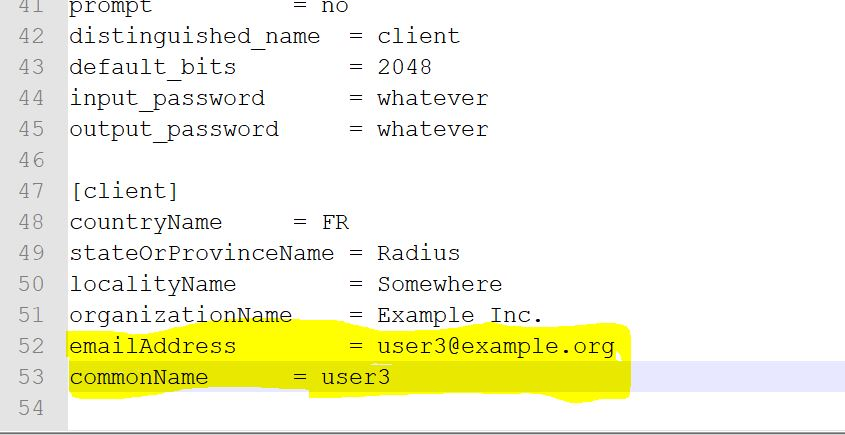

6.6. WiFi EAP Demo with Raspberry Pi3¶
6.6.1. Prerequisites¶
Rsapberry pi3 with raspbian OS installed.
Ubuntu machine to run freeRadius
Access point (WPA/WPA2 Enterprise capable)
6.6.3. Setting up Access point¶
Connect Access point (WPA/WPA2 Enterprise capable) and Linux machine over a ethernet cable,
Log in to access point
Under wireless settings change security to
WPA/WPA2 Enterpriseand give the ip address of Ubuntu machine to RADIUS Server IPRADIUS Server Port - 1812
Enter any password in RADIUS Server password field
6.6.4. Setting up freeradius Server on Ubuntu¶
- Install freeradius server on ubuntu machine.
sudo apt-get install freeradiusFreeradius is installed at /etc/freeradius
Now add the access point ip address and radius password to client configuration file -
/etc/freeradius/clients.confFor freeradius 2.2.8 add, client 192.168.2.1/16 { secret = <radius server password mentioned in previous section> shortname = <Any short name> } For freeradius 3.0 add, client router { ipaddr = 192.168.2.1 secret = <radius server password mentioned in previous section> }Generate client and server keys. Scripts to generate keys and certificates are available in freeradius source code
git clone https://github.com/FreeRADIUS/freeradius-server.git cd freeradius-server
- Add client email address and common name in
/freeradius-server/raddb/certs/client.cnf 
- Add client email address and common name in
Execute bootstrap script at /freeradius-server/raddb/certs
./bootstrap
Keys and certificates are generated in folder
/freeradius-server/raddb/certsCopy root ca cert, server key and server certificate to installed freeradius path
cp /freeradius-server/raddb/certs/ca.pem /etc/freeradius/certs/ cp /freeradius-server/raddb/certs/server.key /etc/freeradius/certs/ cp /freeradius-server/raddb/certs/server.pem /etc/freeradius/certs/ cp /freeradius-server/raddb/certs/dh /etc/freeradius/certs/
Add client details to user configuration file
For freeradius 2.2.8, add details in /etc/freeradius/users file <user_name> Cleartext-password := <user_password> Reply-Message = "<message>" For freeradius 3.0 add details in /etc/freeradius/mods-config/files/authorize file <user_name> Auth-Type := Accept, Cleartext-password := <user_password> Reply-Message = "<message>"Make the following changes to freeradius conf file at
For freeradius 2.2.8 -
/etc/freeradius/eap.conf.For freeradius 3.0 -
/etc/freeradius/mods-available/eap.@@ -199,6 +199,7 @@ eap { # *one* CA certificate. # # ca_file = /etc/ssl/certs/ca-certificates.crt + ca_file = /etc/freeradius/3.0/certs/ca.pem # OpenSSL will automatically create certificate chains, # unless we tell it to not do that. The problem is that @@ -498,7 +499,7 @@ eap { # # You should also delete all of the files # in the directory when the server starts. - # tmpdir = /tmp/radiusd + tmpdir = /tmp/radiusd # The command used to verify the client cert. # We recommend using the OpenSSL command-line @@ -703,7 +704,8 @@ eap { # client certificate with EAP-TTLS, so this option is unlikely # to be usable for most people. # - # require_client_cert = yes + EAP-TLS-Require-Client-Cert = Yes + require_client_cert = yes }Create a radiusd directory in /tmp and assign permission for freerad user
mkdir tmp/radiusd sudo chown freerad:freerad tmp/radiusd
Start free radius server as
sudo freeradiux -X
6.6.5. Setting up Raspberry Pi3¶
Copy plug and trust middleware package to rpi3 at
/home/pilocationModify the openssl engine id to
pkcs11in openssl engine header fileax_embSeEngine.h.Location:
simw-top/sss/plugin/openssl/engine/inc/ax_embSeEngine.hBuild openssl engine
cd simw-top python scripts/create_cmake_projects.py cd ../simw-top_build/raspbian_native_se050_t1oi2c make install ldconfig /usr/local/lib
Copy client key (client.key), client certificate (client.crt), Root CA certificate (ca.pem) from ubuntu machine (
freeradius-server/certs/) to raspberry pi at location/home/pi/wifiEAPRefer to CLI Tool for pyCLI tool setup. Using pycli tool, create a reference pem file for client key
cd /home/pi/wifiEAP openssl rsa -in client.key -out client.pem ssscli connect se050 t1oi2c none ssscli set rsa pair 0x1234 client.pem ssscli refpem rsa pair 0x1234 client_ref.pem
Add folowing network configuration to wpa_supplicant.conf file (
/etc/wpa_supplicant)pkcs11_engine_path=/usr/local/lib/libsss_engine.so pkcs11_module_path=/usr/local/lib/libsss_engine.so network={ ssid="<SSID>" priority=1 engine=1 key_mgmt=WPA-EAP pairwise=CCMP TKIP auth_alg=OPEN eap=TTLS # When using freeradius 2.2.8, use TLS identity="<user_name>" # from user configuration file password="<user_password>" # from user configuration file ca_cert="/home/pi/wifiEAP/<ROOT_CA_CERT_FILE>" client_cert="/home/pi/wifiEAP/<CLIENT_CERT_FILE>" private_key="/home/pi/wifiEAP/<CLIENT_KEY_REFERENCE_FILE>" private_key_passwd="<PRIVATE_KEY_PASSWORD>" # If key file is not encrypted with pass phrase, comment this line. ca_cert2="/home/pi/wifiEAP/<ROOT_CA_CERT_FILE>" client_cert2="/home/pi/wifiEAP/<CLIENT_CERT_FILE>" private_key2="/home/pi/wifiEAP/<CLIENT_KEY_REFERENCE_FILE>" private_key_passwd="<PRIVATE_KEY_PASSWORD>" # If key file is not encrypted with pass phrase, comment this line. }
Change the engine_id to
pkcs11in openssl configuration file (/simw-top/demos/linux/common/openssl11_sss_se050.cnf)[e4sss_se050_section] engine_id = pkcs11 dynamic_path = /usr/local/lib/libsss_engine.so init = 1 default_algorithms = RAND,RSA,EC
Set the openssl config path as call:
$ export OPENSSL_CONF=/simw-top/demos/linux/common/openssl11_sss_se050.cnf
kill wpa_supplicant process as
pkill wpa_supplicant
Restart wpa_supplicant process as
wpa_supplicant -c/etc/wpa_supplicant/wpa_supplicant.conf -iwlan0 -Dwext
On successful TLS handshake, Rpi should be assigned with a valid IP address.
Note
Tested with openssl version of 1.1.0j on raspberry pi.
Ip address mentioned above is for illustrative purpose.